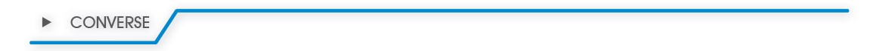

100
Unidade 5 - Ângulos e diagonais de um polígono

Calçada com revestimento retangular. Bremen, Alemanha, 2017.(kathuw56/Flickr)
101
Calçada com revestimento hexagonal. Pavimentação em São João Evangelista, MG, 2017.(Pac/Flickr)
As imagens apresentadas mostram alguns pisos revestidos por peças cujas formas se assemelham às figuras geométricas.
Quando vamos fazer uma calçada ou escolher o piso de um cômodo da casa nos deparamos com várias opções. Estas peças, muitas vezes, apresentam formas geométricas conhecidas.
Você já observou as formas geométricas mais utilizadas para compor os pisos? Que formas são essas?
Em sua opinião, por que essas formas geométricas são mais utilizadas?